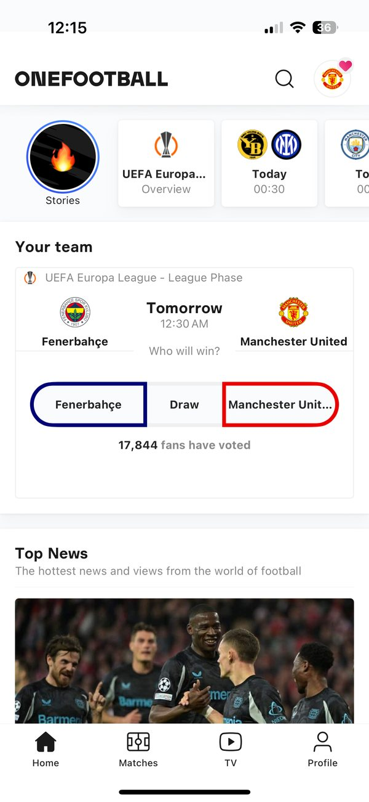
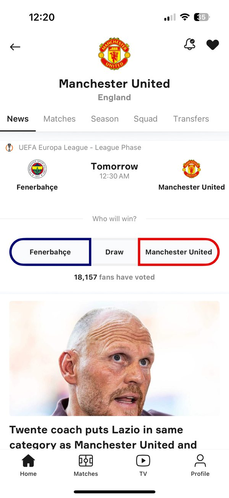
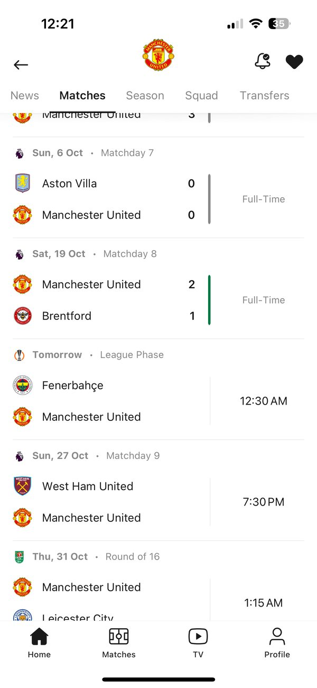
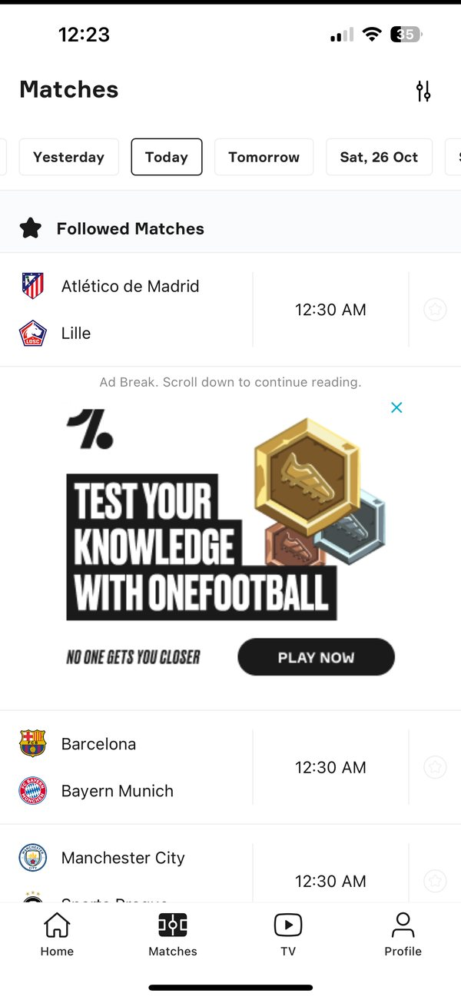
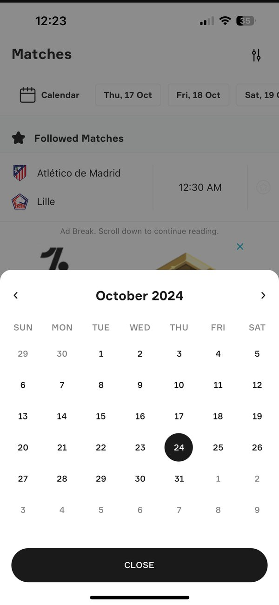
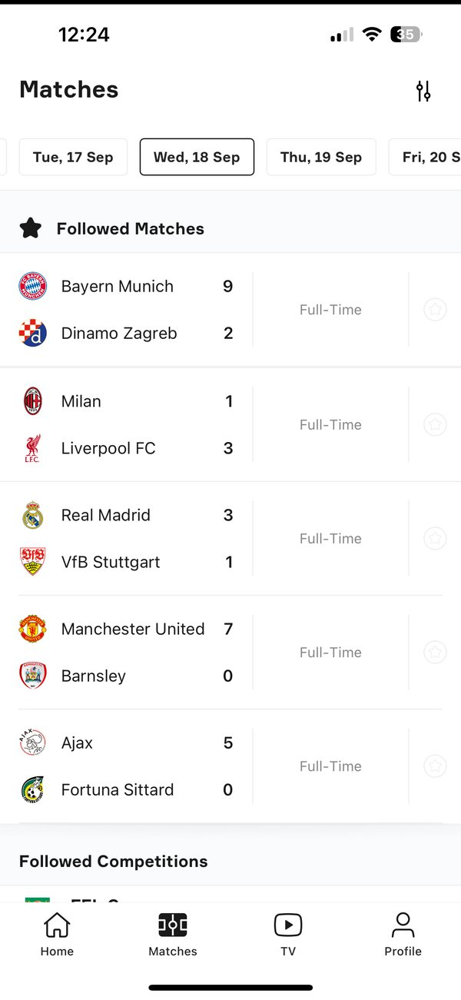
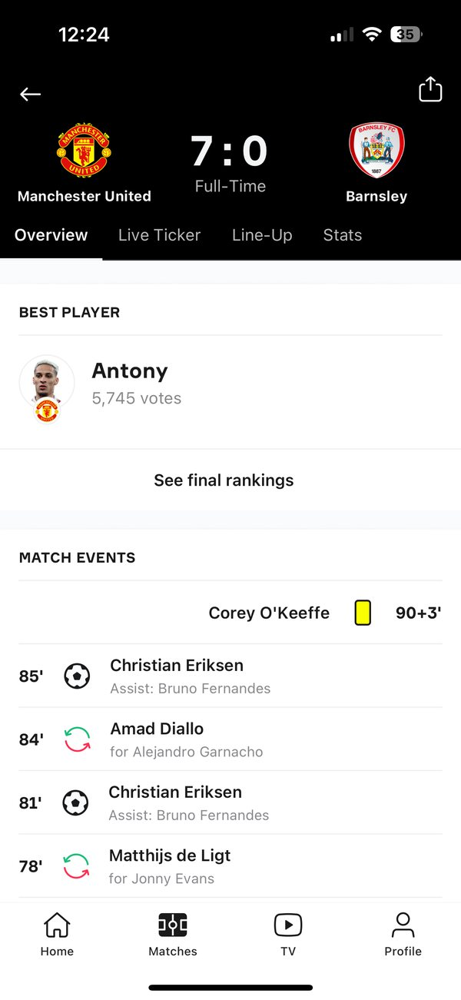
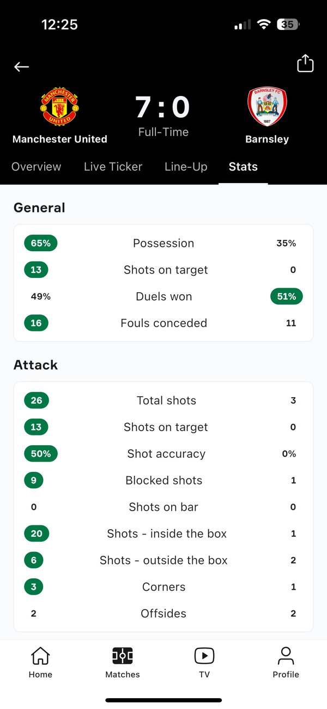

- Case study
- Sports
- iOS
OneFootball App
A teardown and redesign of the football app I’ve used every day since 2015.

Context
What is OneFootball?
OneFootball is a popular mobile app for football fans like me. It covers everything football: news, live scores, highlights, statistics and reports from 200+ leagues in 12 languages.
This case study breaks down one of the most loved football apps to understand why it works and to offer my take on improving the experience. To suggest changes, it helps to understand why certain decisions were made in the first place. As a regular user, I admire how simple it is to navigate and how well it delivers on its promise with great visual design.
I followed the three questions every fan opens it with: When do we play next? How did we do? What’s the latest? For each, I looked at how it works today, what gets in the way, and what would make the answer easier to scan.
Before I changed anything
What already works
A good product to build on, so I kept what works and refined the rest.
Free, no sign-up
You reach your goal as soon as the app opens.
Short journeys
Most goals take about three steps. Even a player’s career history is four taps away.
Everything in one place
News, scores, stats and reports from 200+ leagues.
A confident visual identity
Bold colour and type that already feel like football.
Question 1
When do we play next?
Today
Three steps, and the date is hidden
- 1

Open the app
- 2

Tap your club
- 3

Open Matches
3 steps
What gets in the way
Every day looks the same
- Fixtures live inside the club page. The main Matches tab doesn’t tell you which days your team plays.
- So you scamper day by day. Fans flick through dates until their team shows up.
What I changed
A heart on match days

Date picker
Spot your team’s match days at a glance
A heart marks every day your favourite team plays, right in the date strip, so there’s no hunting.
Question 2
How did we do?
Today
Six steps to an older result
- 1
Open the app
- 2

Go to Matches
- 3

Open the calendar
- 4

Pick the date
- 5

Open the match
- 6

See the stats
6 steps
What gets in the way
Too much to scan
- Every match competes for attention. Followed and unfollowed games sit in one long list.
- An ad breaks the list. It interrupts you mid-scroll, before you reach the result.
- Scores are stacked. Teams sit one above the other, so the result needs a second look.
What I changed
Your matches first, results at a glance


Drag across the screen to compare current and proposed

Filter
Followed matches first
A switch shows only the matches you follow. It starts on, so the games you care about come first.

Match card
One card, three states
Teams sit side by side. Before kick-off the time stands out, during the match the leading score is bold and the minute is red, and at full time the winner is highlighted.
Question 3
What’s the latest?
What gets in the way
Cards that change their order
- Small and large cards disagree. Image, headline and source swap places from one card to the next.
- Share moves around. Its position changes with the card, so it’s harder to find.
What I changed
One order, two card sizes
Headline first, then publisher and time, then share, on every card.


Drag across the screen to compare current and proposed

Small card
Image left, headline right
People scan a feed from the top left. The image anchors the eye and the headline follows.

Large card
Big image on top
A large image draws the eye first, then the headline and source.
Where it all lives
Architecture

Outside this redesign
Not a design fix, but worth noting
Some of my frustrations sit with performance and content rather than design: long loading times, scroll jumps, a lagging video player, blank spaces where content fails to load, and contributor articles that aren’t always credible. They matter, and they need engineering and editorial work alongside design.
Conclusion
Easier answers to the same three questions
- 1When do we play next?A heart marks your team’s match days.
- 2How did we do?Your matches first, scores side by side.
- 3What’s the latest?Every card reads in the same order.
I’ve used OneFootball every day since 2015. These are refinements to a product I love, not a rebuild. Kudos to the team for their user-oriented goals (pun intended).